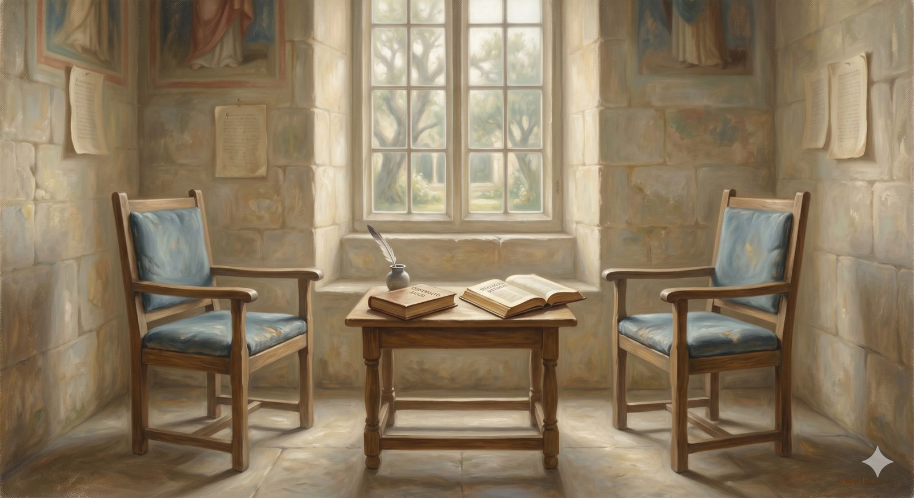

Calvinism & Arminianism
Calvinism and Arminianism mapped fairly — TULIP and the Remonstrance, what each tradition protects, the ground they share, and where this Reformed site openly stands.
"...work out your own salvation with fear and trembling, for it is God who works in you, both to will and to work for his good pleasure." Philippians 2:12–13 (ESV)
Off the heights of the Delectable Mountains, a quiet path leads to the annexes — the rooms set a little apart, for honest pilgrims who love the same Lord and have nonetheless walked to different conclusions. The rule of the house changes here. Everywhere else this site teaches; in the annexes it maps, laying out the strongest case each side makes before saying, plainly, where it stands. The first and oldest of these conversations is the one between Calvinism and Arminianism.
The question can be stated simply: when a person comes to saving faith, what is the relationship between God's initiative and the person's own response? Everyone serious agrees that both are present — that God acts in salvation and that human beings genuinely believe. The dispute is over the logical order and the causal weight between them. Does God's sovereign choice of the believer precede and produce their faith? Or does God's grace create a genuine possibility of response that the person then freely exercises?
In plain terms — the simplest version
Picture someone drowning. The Calvinist says God dives in, pulls them out, and resuscitates them — only then do they breathe and respond; God's action is entirely prior, because the drowning person can contribute nothing. The Arminian says God throws a lifeline and the drowning person must choose to grab it — God has done everything necessary to make rescue possible, but the reaching is genuinely theirs.
Both agree the person was drowning. Both agree God rescued them. They differ on the mechanism of the rescue.
The Calvinist positionThe sovereignty of grace
Summarized by the acronym TULIP, drawn from the Canons of Dort, the five points are logically linked. Total depravity: the fall has left the will not merely weakened but bent away from God, unable of itself to choose him — total in scope (every part of us is affected), not in degree (not that everyone is as bad as possible). Unconditional election: God's choice of those to be saved rests not on foreseen faith or merit but on his own sovereign purpose — the ground of salvation entirely outside the believer, which Calvin found deeply comforting. Definite atonement: Christ's death actually secured salvation for a specific people rather than merely making it possible for all — the most disputed point even among Calvinists. Irresistible (effectual) grace: when God calls a person in regenerating grace, that call works through the will, not against it, producing genuine desire and faith — and it does not fail. Perseverance of the saints: those genuinely born again will be kept to the end, not by their grip on Christ but by his grip on them.
The Arminian positionGrace and genuine freedom
Jacobus Arminius was a Dutch Reformed theologian who came to question the Calvinist account of predestination — not departing from the Reformation wholesale, for he shared its commitment to Scripture, grace, and justification by faith alone. His concern was that the Calvinist framework risked making God the author of sin, undercutting genuine responsibility, and rendering the universal gospel call incoherent. The corresponding five points: conditional election (God elects in view of the faith he foreknows); unlimited atonement (Christ died for everyone without exception, and the universal call is no polite fiction); prevenient grace — arguably the tradition's most underappreciated contribution — the grace that comes before and overcomes the effects of depravity enough that a person is genuinely able to respond, though not made to do so inevitably; resistible grace (the Spirit's call can be genuinely refused); and conditional perseverance (a genuine believer can, through persistent and willful unbelief, fall away — so the warning passages are not merely hypothetical).
What each is protectingBoth guard something real
This is the heart of the matter, and the reason the dispute has lasted so long among serious people: each side is guarding something genuinely biblical. The Calvinist is protecting the absolute priority and sufficiency of grace — that salvation is God's work from first to last, that no one can boast, that assurance rests on a God whose purpose does not waver with our performance. The Arminian is protecting the genuineness of human responsibility and the sincerity of God's universal offer — that when the gospel is preached to all, it is truly addressed to each, that God genuinely desires all to be saved, and that the warnings against falling are real warnings. Neither concern is a misunderstanding to be corrected. Each is a truth the other must find room for.
The Calvinist guards that grace is entirely God's gift. The Arminian guards that the offer is genuinely made to all. Both are protecting something the Bible plainly teaches.
The ground they shareLarger than the dispute
The most important practical observation is that what these traditions agree on outweighs what they dispute. Both hold that God is the initiator of salvation — that no one comes to Christ without grace acting first. Both hold that human beings genuinely believe and repent. Both ground assurance in Christ's finished work, not the believer's performance. Both affirm justification by faith alone, the authority of Scripture, the new birth, and the call to holiness. And both have produced centuries of faithful missionaries, patient pastors, and ordinary saints who loved God at great cost. John Wesley and George Whitefield disagreed sharply on predestination and went on, for the most part, sharing platforms and honoring the work of God in each other — Wesley reportedly saying he expected to find Whitefield in heaven so near the throne, and so far ahead of himself, that he would scarcely see him. That posture — real disagreement held inside real brotherhood — is the one this site commends.
Where this site standsReformed, and honest about it
It would be a kind of dishonesty to map this terrain without saying where the site itself stands. Its instincts on the sovereignty of grace are Calvinist — the Five Solas, the Westminster Standards, and the touchstones named throughout are all in the Reformed stream, and that is not concealed. But the aim throughout has been to do with this debate what the site does with every genuine disagreement: to name what each position protects rather than dismiss the other. Wesley's pastoral instinct — that every person who hears the gospel deserves to hear it as genuinely addressed to them — is a legitimate concern the Calvinist must grapple with, not a confusion to be waved away. So the Reformed conviction here is held as a conclusion drawn from Scripture, not as a weapon against those who, reading the same Scripture with equal care, have drawn a different one. If you stand in the Arminian tradition: you are welcome here, and the gospel this site presents is genuinely offered to you, and genuinely addressed to you.
That is the first annex. The second steps away from the inner workings of salvation to a different contested ground entirely — the supposed war between faith and the discoveries of science.